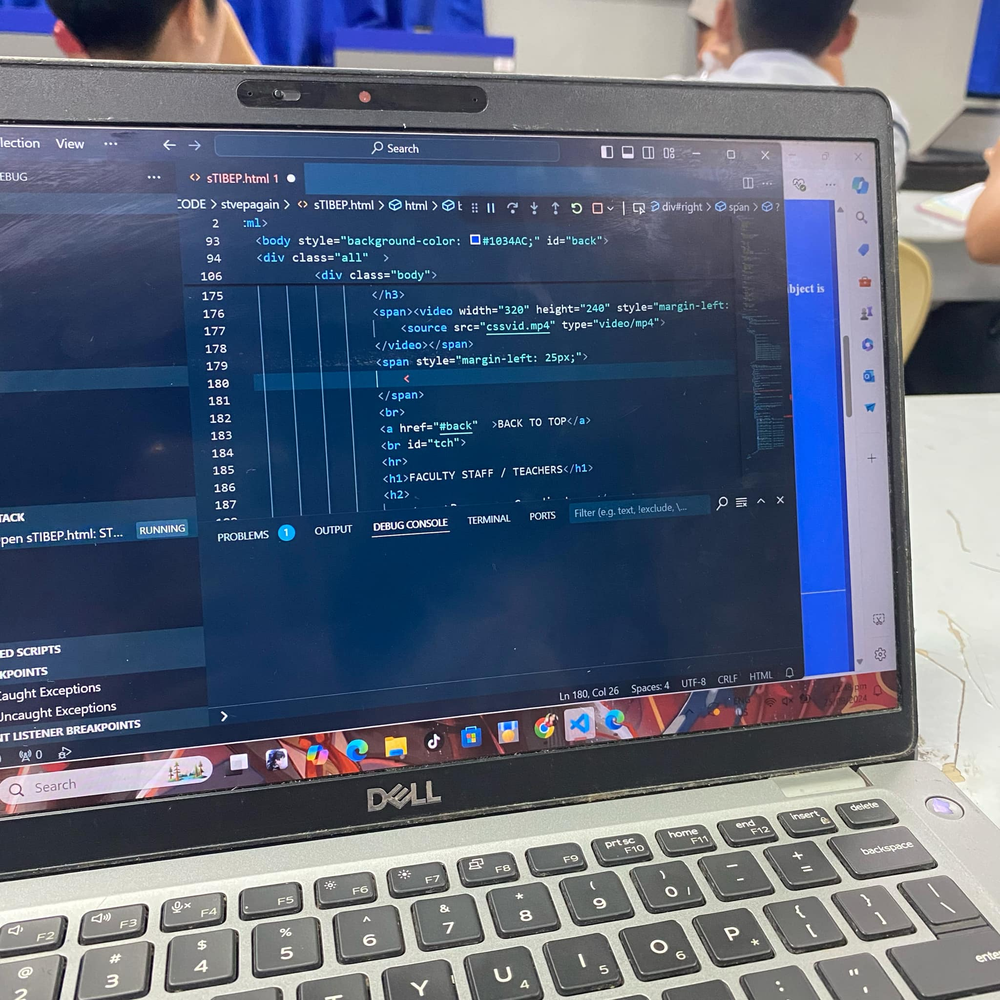
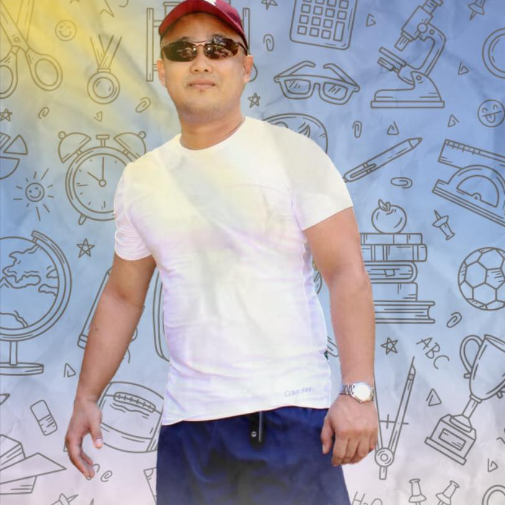
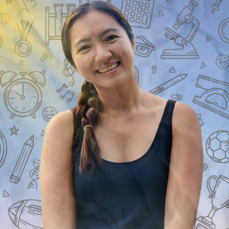
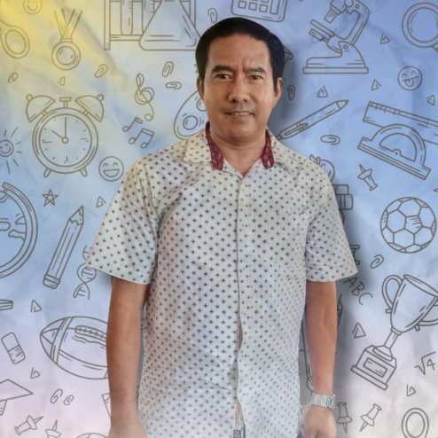
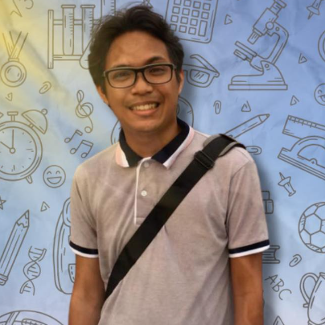
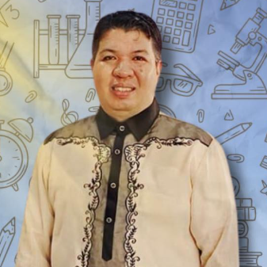
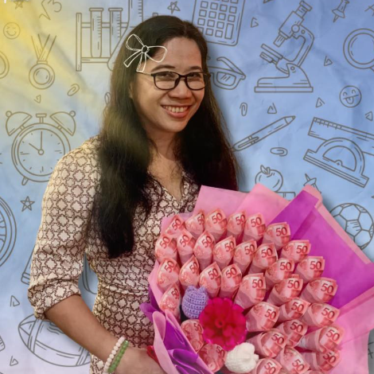

Strenghten Technical Vocational Education Program (STVEP)
WHAT IS STVEP?
Strenghten Technical-Vocational Education Program(STVEP), was formerly known as School of the Future, is a program in Iloilo National High School implemented since S.Y. 1996-1997 which exploits information and technology in teaching basic secondary education by the use of Computer-Aided instruction to meet the demandsof the Information Technology Age.
MISSION
To create opportunities for high school students to acquire the necesary academic competence, technical-vocational skills/ employability skills and other life skills needed to cope up with the rapid change of the technology in a knowledge-based economy.
BACK TO TOPVISION
A globally competetive secondary education program in a knowledge-based economy
BACK TO TOPSPECIALIZATION
STVEP is known for its special subjects, PROGRAMMING & CSS.
PROGRAMMING
The programming class teaches about different programming languages such as JAVA, VBS, JAVASCRIPT, etc. The subject is made to improve students coding skills and also blaalalala
CSS
Computer System Servicing is a program that specializes in computer parts and focus in assembling parts together

BACK TO TOP
FACULTY STAFF / TEACHERS
Program Coordinator;
 Sir Jano S Tabor
Program Counselor;
 Ma'am Jonalyn Pauchano
Grade 7;
 Sir Alex Jaruda
 Sir Rio Castanares Jr.
Grade 8;
 Sir Neil Joquino I
Sir Rey Seith Buyco
 Ma'am Ma. Leonora Celiz
Grade 9;
Ma'am Irene Torrefranca
 Ma'am Rowena Pastera
Ma'am Rowena Pastera
Grade 10;
Ma'am Gaymarie Akol
Ma'am Allen Tendero
BACK TO TOP
STVEP COUNCIL